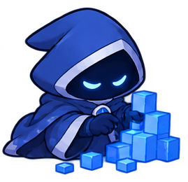

| Главная
Приложения
Расписание
Проекты и команды
Материалы
Приложения
О курсе

Процедурный бестиарий
Один моб — пять способов его собрать: части, параметры, грамматика, шум и эволюция.
1. Пять способов
2. Лаборатория